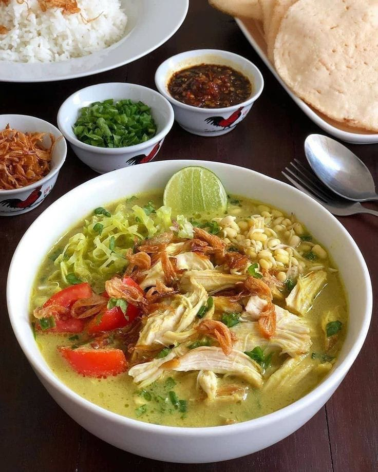
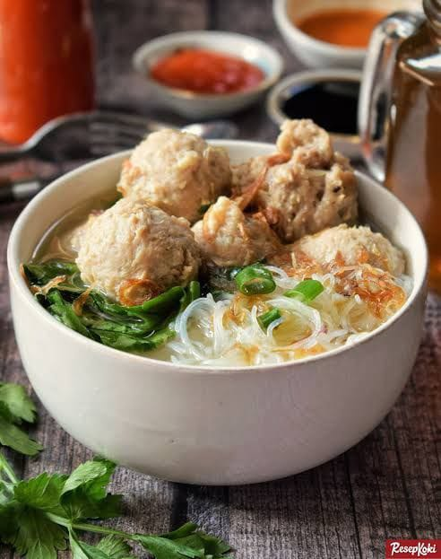

Olahraga Favorite
Olahraga rugby adalah salah satu aktivitas fisik yang menyerupai permainan sepak bola. Namun, bila dibandingkan dengan sepak bola, olahraga rugby ini lebih jarang dimainkan di Indonesia.
Rugby dimainkan dengan membawa dan mendaratkan bola ke gawang atau garis belakang tim lawan.
Hobi

Saya berhobi membaca kejadan masalampau, yang memiliki arti mendalam dalm suatu kejadian yang sangat berkesan, apalagi dengan sejarah yang panjang seperti,WW1, WW2, cold war, maupun pasca perebutan irian barat antara indonesia, dan belanda saat itu. Keuntungan mempelajari sejarah adalah mengetahui secara rinci dan tepat apa, siapa, kapan, di mana, dan dampak dari peristiwa tersebut. Dengan cara ini kita dapat menambah informasi dan pengetahuan tentang fakta atau peristiwa tertentu.
Soto

Soto (juga dikenal dengan beberapa nama lokal seperti, sroto, sauto, tauto, atau coto) adalah makanan khas Indonesia seperti sop yang terbuat dari kaldu daging dan sayuran. Daging yang paling sering digunakan adalah daging sapi dan daging ayam, tetapi ada pula yang menggunakan daging babi, daging kuda atau daging kambing. Berbagai daerah di Indonesia memiliki soto khas daerahnya masing-masing dengan komposisi yang berbeda-beda, misalnya Soto Madura, Soto Kediri, Soto Pemalang, Soto Lamongan, Soto Jepara, Soto Bening Solo.
Bakso

Bakso memiliki akar dari seni kuliner Tionghoa-Indonesia. Hal ini ditunjukkan dari istilah "Bakso" berasal dari kata Bak-So, dalam Bahasa Hokkien yang secara harfiah berarti "daging giling". Karena mayoritas penduduk Indonesia adalah muslim, maka bakso lebih umum terbuat dari daging halal seperti daging sapi, ikan, dan ayam. Kini kebanyakan penjual bakso adalah orang Jawa dari Wonogiri dan Malang. Tempat yang terkenal sebagai pusat bakso adalah Solo dan Malang yang disebut Bakso Malang. Bakso Malang dan bakso Solo adalah masakan bakso dan disajikan dengan khas Jawa. Bakso berasal dari Tiongkok tetapi berbeda dengan bakso Malang dan Solo. Bakso Tiongkok biasanya terbuat dari babi atau makanan laut dan warnanya agak kecokelatan serta bentuknya tidak bulat sekali. Sedangkan bakso Malang dan Solo terbuat dari daging sapi, berwarna abu-abu dan bentuknya bulat sekali. Bakso Tiongkok biasanya tidak disajikan dengan kuah melimpah berbeda dengan bakso Malang dan Solo yang disajikan dengan kuah melimpah.
Risoll
Risoles yaitu semacam makanan camilan atau jajanan khas Jakarta. Pada bahasa Belanda risoles disebut rissole yaitu pastry berisi daging, biasanya daging cincang, dan sayuran yang dibungkus dadar, lalu digoreng sesudah dilapisi tepung panir serta kocokan telur ayam.